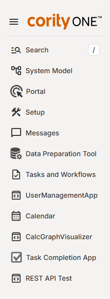

The Management System includes a set of default pages which are available to all systems, plus a set of custom pages containing the specific functionality that your organization uses, such as inspections or incident tracking. The pages available to each user are controlled by their permissions.

The default pages, include:
Home
The Home page shows the dashboards available to you, including your personal Desktop dashboard and any system dashboards, configured for you by an administrator. See Manage My Dashboards.
Calendar
The Calendar page presents a Calendar view of your tasks and workflows. Daily, weekly and monthly views are available. See Calendar.
Messages
The Messages page contains system-generated messages such as data warnings and task and workflow notifications. The command log and regulatory notices are also accessed from this page, if available to you. See Messages.
Tasks and Workflows
The Tasks and Workflows page allows you to search for, view and manage Tasks or Workflows. The Search function allows you to view a wider range of tasks and workflows than those that may be shown on your desktop, which only shows your current personal assignments. See Search Tasks and Search Workflows.
System Model
The System Model page shows the components of your system, including the System Model hierarchy and the libraries of related resources (Citations, Documents, Reports and System Dashboards). Access controlled by user permissions and rights. See System Model.
Setup
The Setup pages allows you to setup and manage functions for system components, such as user and group management, custom fields and templates setup, and other components. Access to this page is controlled by your user rights.
Other menu options depend on the apps that are configured for your organization and to which you have access. When Core (GX2) integration is configured, users can navigate to the Core (GX2) solutions available to them from the menu.